Though the American gaming market was in shambles, in Japan, local companies created their own thriving industry with original games and systems. Leading the Japanese market was Nintendo, which brought its Famicom to the United States as the Nintendo Entertainment System (NES) in late 1985. The American gaming market was still dead following the crash, but Nintendo built interest in its NES console with original games such as Super Mario Bros. and The Legend of Zelda. Fueled by word of mouth, hit games from Japanese developers, and a legion of young fans, the NES created a phenomenon that revitalized the gaming market. From there, Nintendo and other Japanese developers like Capcom and Konami took the industry to new highs, making Japan the new leader of console gaming.
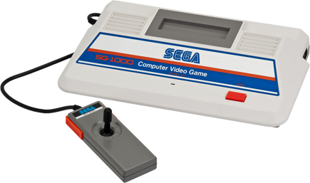 Release Year: 1983 The SG-1000 was the first console from Sega, a Japanese amusement company known for its video arcade games. Released primarily in Japan, the SG-1000 started a new console generation that offered more complex video games with larger, more colorful, and more detailed sprite graphics. Sega's system faced heavey competition from Japan's burgeoning console market, and it was ultimately overshadowed by Nintendo's new system, the Famicom. Though the SG-1000 wasn't a complete failure, Sega continually modified and updated the system to remain competitive, eventually rereleasing it as the revamped Master System for its worldwide debut.
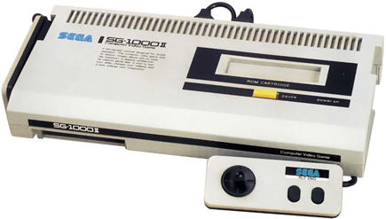 Release Year: 1984 After the SG-1000's lukewarm reception, Sega rapidly redeveloped the console and released the Mark II just a year later. The console was the same internally but featured a new aesthetic and tweaks such as a front-facing expansion port and a detachable player-one controller. The Mark II also copied some of the Famicom's design, replacing the joystick with joypads that stored on the console's sides.
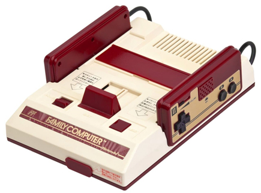 Release Year: 1983 The Famicom, short for Family Computer, was Nintendo's first game console and released exclusively in Japan. Despite heavy competition from other new 8-bit consoles and computers, the Famicom stood out with a strong lineup of first-party games and an innovative controller. By 1985, the console had completely dominated the market, and third-party developers were willing to sign restrictive exclusivity agreements just to get their games on the system. With runaway success in Japan and a library of exclusive hit tiles, Nintendo geared up to release the system worldwide, which would kickstart a new era of console gaming.
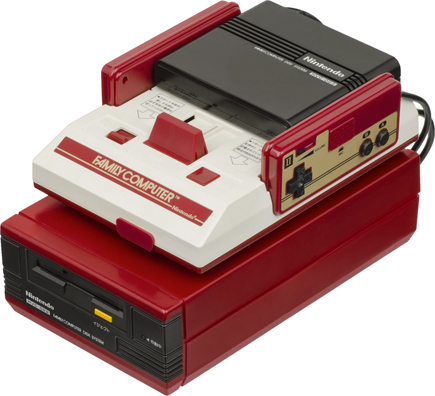 Add-on Nintendo produced various add-ons for the Famicom that were exclusive to Japan, including a modem, 3D glasses, and a keyboard attachment for programming in BASIC. Another exclusive attachment was the Disk System, which made games available, proprietary floppy disks. This allowed for game saving in titles like Metroid and The Legend of Zelda or for buying inexpensive games through disk-writing kiosks. Players bought a blank disk that could be inserted into the kiosk and, for a small fee, would get a complete game written onto it.
Variant Sharp, the Japanese electronics company, had worked with Nintendo since the 1960's as a components supplier. That relationship expanded into hardware licensee in the 1980's, when Sharp produced a few unique model variants of the Famicon. One was a Sharp television with a Famicom built in, while the Twin Famicom line combined the Famicom Disk System into a single unit.
Game consoles moved to 16-bit processors in the fourth generation, as new systems with more colorful and detailed 2D sprite graphics battle it out. In the US, Nitendo's market dominance was challenged by Sega, whose Genesis system became a best seller thanks to a highly effective advertising campaign and a string of exclusive, hit games. Other systems did not fare as well; NEC's TurboGrafx-16 failed to connect with American audiences, and a wave of expensive multimedia systems such as the Philips CD-i and Commodore CDTV sold poorly. Finally, the fourth generation also saw the emergence of multiple handheld consoles, with Nintendo's simple, monochrome Game Boy beating out high-end color systems from Atari and Sega to become the platform leader.
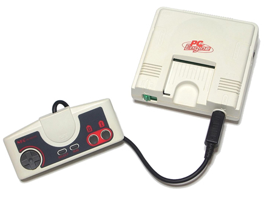 Release Year: 1987 The fourth generation of game consoles began with the PC Engine, the first home gaming console to use 16-bit graphics. With an 8-bit CPU, it was not a true 16-bit system, but it's colorful, lush visuals were an improvement over older 8-bit consoles. The PC Engine was developed through a partnership between the electronics giant NEC and the video game developer Hudson Soft. With popular and exclusive games from Hudson Soft and ports of arcade titles that older systems couldn't handle, the tiny PC-Engine built a sizable following in Japan, becoming the country's second best selling console of that era.
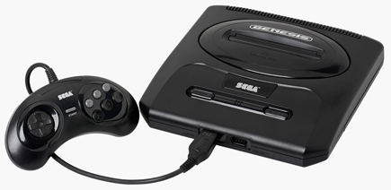 Release Year: 1989 The Genesis was a rebranded Mega Drive console for the North American market. After the failure of the Master System in the Nintendo-dominated United States, Sega poured its resources into an edgy and aggressive marketing campaign for the Genesis, using ads to directly attack and ridicule Nintendo. The ads were an incredible success, and combined with exclusive sports and action games (such as Sonic the Hedgehog) that led the Genesis to massive sales. The Genesis sold more than 20 million consoles in the United States alone, ending Nintendo's undisputed reign and becoming Sega's best-selling system ever.
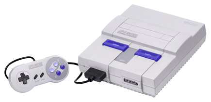 Release Year: 1991 The Super Nintendo Entertainment System (NES) was what Nintedo's 16-bit Super Famicom was known as in the rest of the world. In the US, the Super NES launched as the Sega Genesis was rapidly gaining ground against Nintendo, which spurred a fierce console war between the two systems. The Super NES sold neck and neck with the Genesis, but it wasn't until release of the massive hit 'Donkey Kong Country' that the Super NES pulled ahead. Nintendo carried that momentum in its later years as the Genesis wore down and ultimatley became the best-selling 16-bit console in the United States by the end of the generation.
The video gaming industry underwent a massive transition in the fifth console generation as technology rapidly evolved and market players rose and fell. Optical media overtook cartridges due to their low cost and spacious storage capacity, while powerful and custom processors moved games from 2D to 3D. The era also saw a major exodus of hardware manufacturers such as Commodore, Atari, NEC, and 3DO, who dropped out or closed due to poor sales of their systems. Finally, Sega and Nintendo were reduced to secondary players by Sony, a newcomer that crashed into the market with a well-marketed and developer-friendly console that would become one of the best-selling systems of all time.
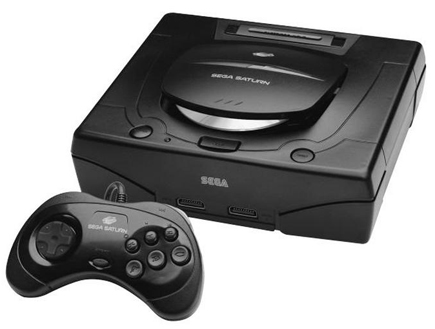 Release Year: 1994 The Japanese arcade scene was thriving in the fall of 1994 when Sega, known for its arcade hits, launched the Saturn console. In Japan, the Saturn received a positive reception for its exclusive ports of Sega's 3D arcade games such as 'Virtua Fighter','Daytona USA', and 'Virtua Cop'. The Saturn would also become the system of choice for 2D fighting games, as the console's architecture was more suited to them than the PlayStation's. The Saturn was a hit with Japan's hard-core gaming crowd, which gave Sega its first successful console in Japan. However, this success wouldn't repeat itself overseas, and the Saturn's failure abroad would severly hurt Sega.
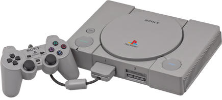 Release Year: 1994 The PlayStation was a 32-bit console from Sony, the major Japanese electronics manufacturer. Sony put its vast resources behind the PlayStation and launched its debut system with a huge marketing campaign and a diverse lineup of games. The PlayStation and it's impressive 3D graphics quickly established Sony as a major player in the console market. The system also greatly benefitted from the mistakes made by Sega and Nintendo, whose difficult-to-program consoles drove third-party developers right to Sony. The result was a massive game library that helped to make the PlayStation one of the best-selling consoles of all time.
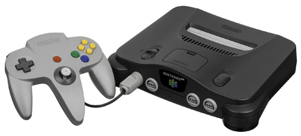 Release Year: 1996 The fifth generation's last home console, the Nintendo 64 (N64) was a cartridge-based 64-bit system with advanced 3D graphics. Its late entry was the result of multiple delays, which gave Sony's popular PlayStation a massive lead over Nintendo. After the console launched, it struggled to attract third-party developers, which were put off by the console's expensive cartridges and difficult architecture. Though this former market leader lost it's top spot to Sony, massive critical and commercial hits like 'Super Mario 64' and 'The Legend of Zelda: Ocarina of Time' helped the system sell a respectable 30+ million consoles worldwide.
The sixth generation of game consoles was dominated by Sony, whose PlayStation 2 surpassed the immense success of the original PlayStaion and vastly outsold it's competitors to become the best-selling system of all time. Fighting for second place were Sega, Nintendo, and Microsoft, a newcomer that endured heavy financial losses to establish its Xbox console. Sega also suffered heavy financial losses after a series of failures that culminated with the Dreamcast, and the company was forced to abandon the console market to become a third-party developer. As for Nintendo, its GameCube struggled to stand out against Sony's PlayStation 2 and Microsoft's Xbox, which led the company to abandon direct competition and instead turn to new ideas and audiences as it moved into the next generation.
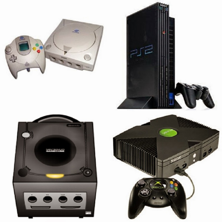 Release Years: 1998-2004 Imagine this like the others, only with sixth generation consoles.
The seventh generation of consoles was dominated by just three major players - Microsoft, Sony, and Nintendo - as gaming moved into the high definition and online era. Cutting-edge, multicore processors in Sony and Micrsoft's console offered impressive graphics on new HD televisions, while Nintendo found incredible success with an unorthodox, motion-controlled console and a dual-screened handheld. The world became more connected with the widespread adoption of high-speed internet, which brought online gaming, digital distribution, and media streaming to the forefront. Finally, the gaming market opened up with the introduction of smart phones and tablets, which produced a new platform for quick, simple games that appealed to people of all ages.
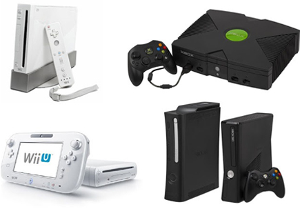 Release Years: 2004-2011 Imagine this like the others, only with seventh generation consoles.
After a proserous and overly long seventh console generation, the eigth generation saw the gaming industry undergo a shift as most companies failed to repeat their previous successes. While Sony resumed its role as the industry leader with the hugely popular PlayStation 4, its portable Vita console only sold a fraction of what the PSP did. Microsoft's Xbox One stumbled with a disastrous prelaunch, which lost the Xbox its popularity abroad.Nintendo, after its market share plummeted due to poor Wii U sales, replaced the system mid-generation with the Switch, a console and handheld hybrid that became a runaway success. Finally, smart phone technology gave rise to a new genre of "microconsoles" powered by mobile processors, most of which failed due to their redundancy and lack of compelling games.
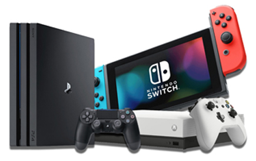 Release Years: 2011-2020 Imagine this like the others, only with eighth generation consoles.
Back to Main